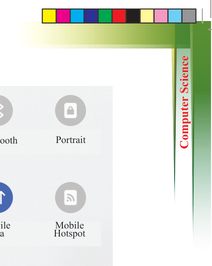
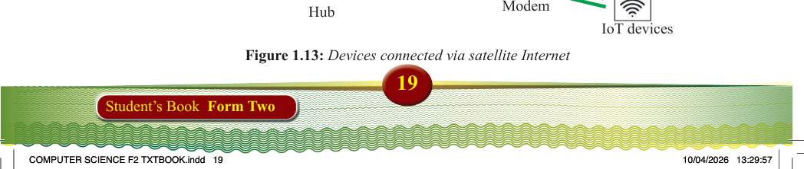
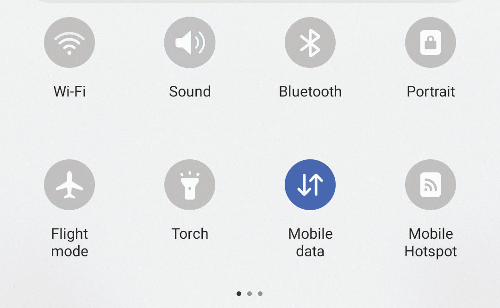
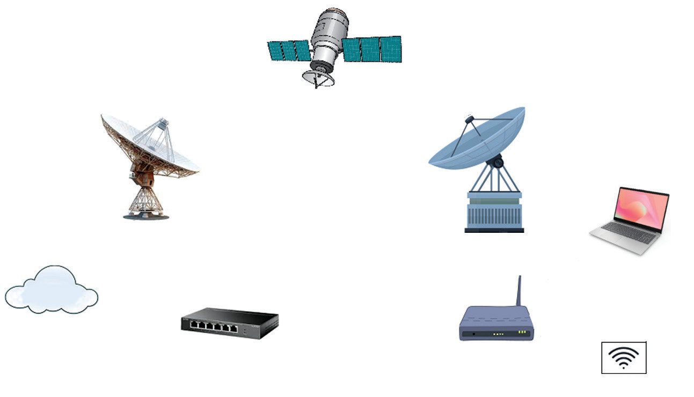
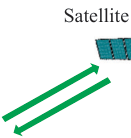
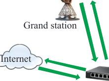
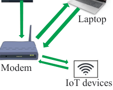

Wi-Fi
Mute
Bluetooth
Portrait
Mobile
Hotspot
Mobile
data
Flight
mode
Torch
Figure 1.12: Mobile data in use
Satellite Internet
Satellite Internet is a wireless connection that uses dishes located on Earth and in
space. It provides remote and underserved areas with crucial access to core networks,
ensuring people stay connected and have access to information and communication
services. Satellite Internet can be accessed from almost any location. It offers a reliable,
high-quality connection even where other services are unavailable. This includes
off-the-grid locations and rural or remote areas with limited or weak connectivity options. For example, satellite Internet is often used in remote areas and on ships to keep Internet access working, even when there are no cables or normal connections.
Figure 1.13 illustrates devices connected via satellite Internet.

Satellite
Internet
Grand station
User terminal
Laptop
Modem
IoT devices
Hub



Figure 1.13: Devices connected via satellite Internet